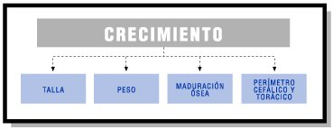

Los niños y niñas evolucionan y crecen, muy rápidamente. Elisa sabe que es muy importante en el desarrollo físico estar muy atenta a dos indicadores que se pueden medir o cuantificar:
La atención a los procesos de crecimiento se convierte en un aspecto básico del necesario conocimiento de los niños o niñas, en un referente para la planificación educativa y en un elemento básico para la prevención y detección de alteraciones.
Para el estudio de los parámetros del crecimiento se establecen cuatro indicadores que permiten comparar la evolución física de cualquier niño o niña con relación a la media de la población:
|  |
| SIRIUS. Estándar. Elaboración propia. |